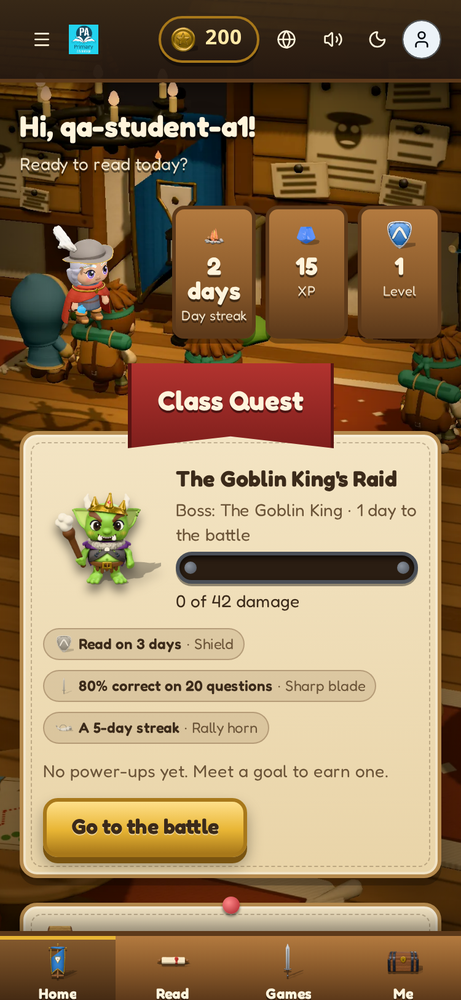
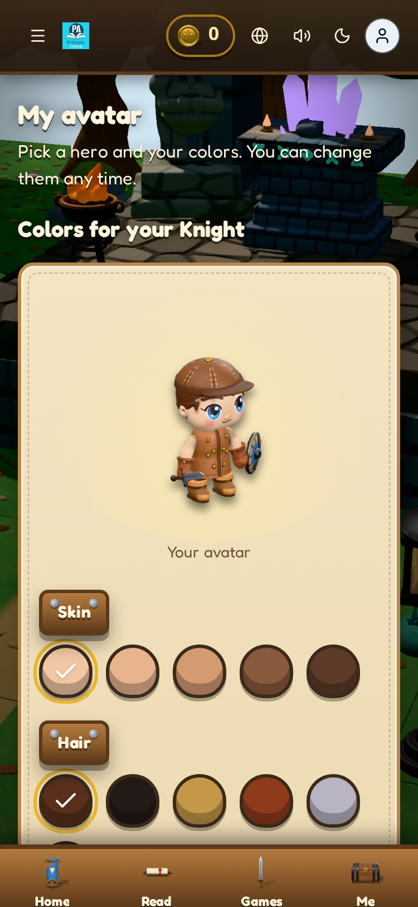
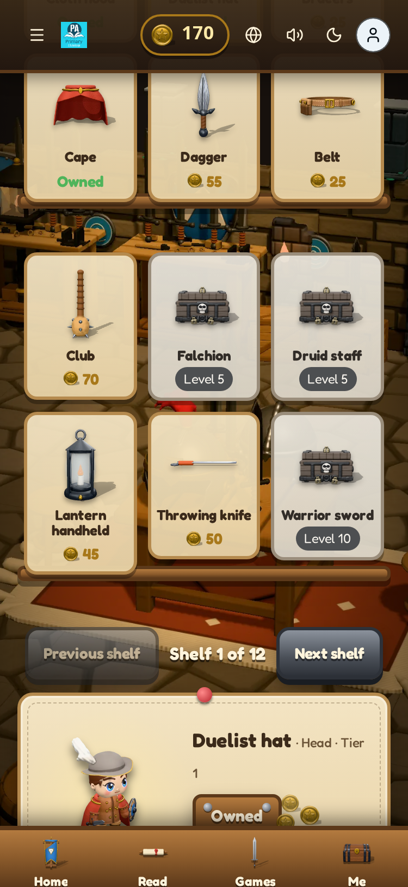
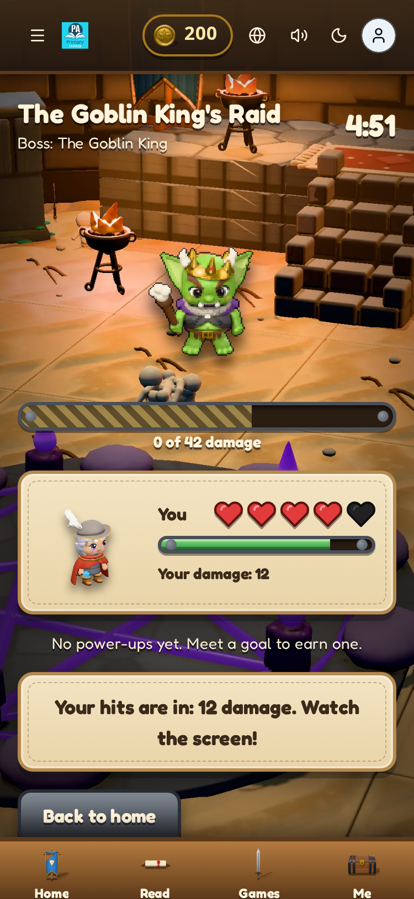
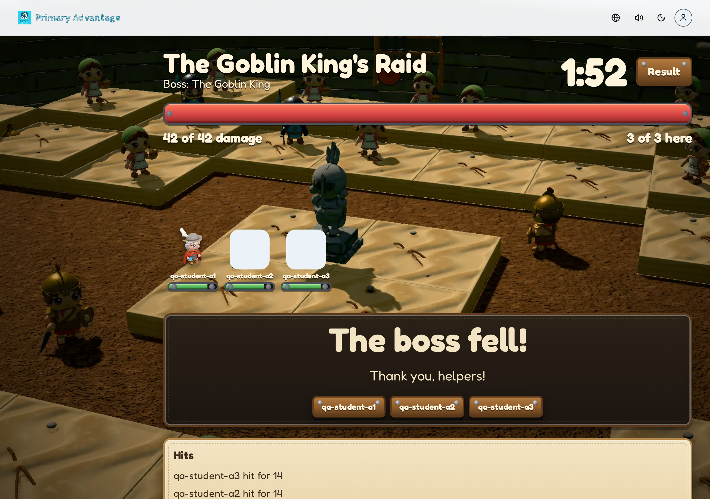

Track primary_rpg_skin_20261006, 2026-10-06. Each shot is a frame recorded from the lane-f build with the QA data (three students, class A). The recording path tells the video session how to get the same frame on the rehearsal environment.
Shot 1: the home hero beside the Class Quest banner

Phone, 375 px, day
Recording path. Sign in as a student with a hero. Home opens. The hero stands at the left of the day streak, XP, and level signs; the Class Quest banner hangs below with the boss portrait and the damage meter. Hold two seconds on the banner, then tap "Go to the battle".
Shot 2: the chosen hero steps into the light

Phone, 375 px, day
Recording path. Sign in as the student with no hero (the demo seed's ton). The shrine opens with the heroes on pedestals. Tap one: step 2 shows the hero in the light beam, breathing, with the colour pots below. Change a hair colour, then save.
Shot 3: coins fly to the counter in the armory

Phone, 375 px, day, the frame right after "Buy"
Recording path. Me → My avatar → the chest "Shop". Pick a shelf item the student can afford (the demo seed gives ploy 220 GP). Tap "Buy": three coins fly from the purse to the counter, the blacksmith nods and thanks the student, the balance drops. Record from the tap to the nod (about 1.5 seconds).
Shot 4: the boss takes a hit

Phone, 375 px, day, the frame of the hit
Recording path. With the quest in play, open the battle page as a student and answer a question correctly in the archway game. The boss flinches, the slash crosses it, and the damage number rises. The teacher moves the quest with the gold button on the live dashboard; the phones follow.
Shot 5: the boss falls on the projector

Desktop, 1280 px, the live dashboard in result
Recording path. The committed damage comes from verified completions only, so the boss falls on real play. Locally: node boss-fall.mjs <questId> lets the three QA students each start a challenge run and post one completion through /api/v1/apk/challenges/runs and /api/v1/apk/complete; the teacher then moves the quest to result. On the rehearsal environment the staff rehearsal gives the same frame with five real phones.
Checks
Recorded 2026-10-06 from the production build of lane-f (next build, next start; the dev server could not start under the OS file-watch limit). Commits up to 91ff50781 (the Forge sync merge).
Shot 5 comes from real play through the API: quest f6519455-78ed-434c-ae71-aeac8eeb6a37, three challenge runs, three completions (each gave 9 XP, no duplicate), committed damage 42 of 42, then the teacher moved the quest to result. The apk routes accept same-origin POSTs only, so the recipe sends an Origin header.
Shot 3: the purchase posts, the coins fly, the panel turns to "Owned", and the shop's own purse drops (220 → 170 → 120 over two purchases).
Every frame has its desktop and night twins in captures/; the recipe scripts are in scripts/.
Open items
The header purse does not refresh after a purchase. The coin counter in the top bar keeps the old balance until the next navigation (220 stayed in shot 3 while the shop purse showed 170). Small fix: refresh the shell balance from the purchase response.
Students with no hero show a white square on the projector.qa-student-a2 and qa-student-a3 have no avatar, so the live dashboard draws an empty tile. Show the class placeholder portrait instead.
The hit frame of shot 4 is the battle page state, not the slash. The slash and the rising damage number play inside the archway game at the moment of a correct answer; a headless frame of the battle page shows the boss with the student's pending hits. The video session records the slash from a real phone in the game.
The coin rain of shot 5 did not land in the headless frame; the fallen-boss panel, the thank-you list, and the hits list did. Check it on a real projector at the rehearsal.